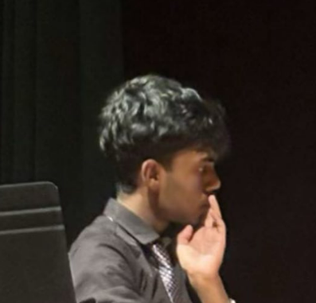
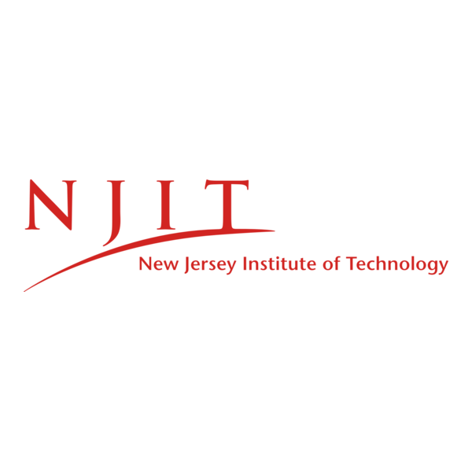
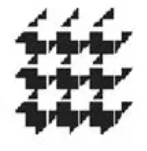
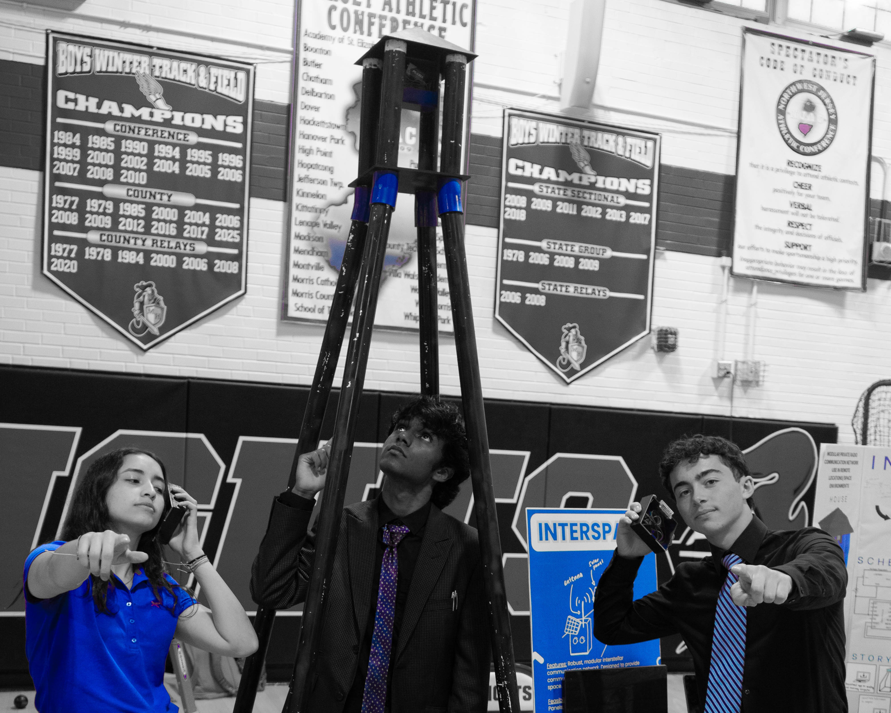
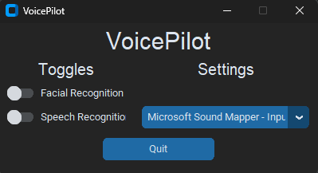
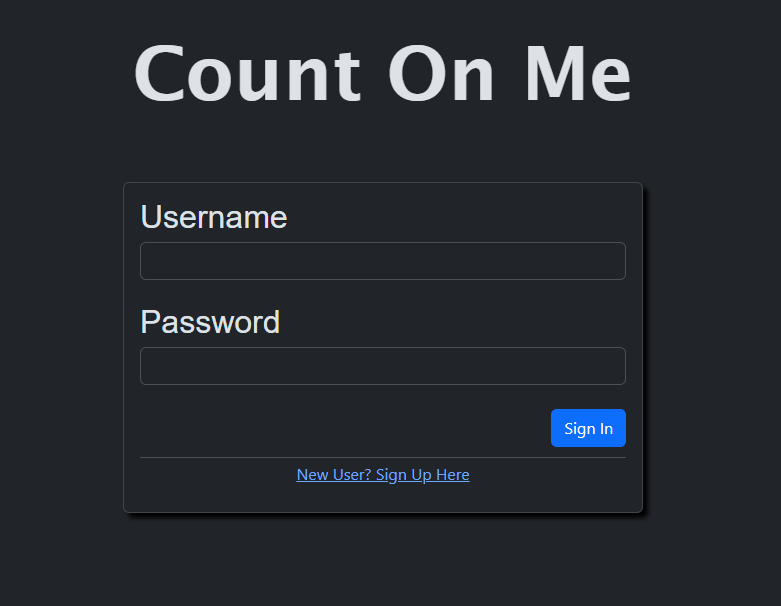

Full-ride Undergraduate Electrical Engineering Student on the PhD Track
Theoretical CS, Robotics, Medical Electronics
Albert Dorman Honors College | B.S. Electrical Engineering (GPA: 4.0/4.0)

Sept 2025 -- Dec 2025New Jersey Institute of Technology | Newark, NJ

Sept 2024 -- PresentRutgers University | Remote
Red Panda Fencing | Rockaway, NJ
New Jersey Institute of Technology | Newark, NJ
NJIT Student Advisory Board | Newark, NJ
Embedded Systems, RF | Oct 2024 -- Present

LLMs, Computer Vision | April 2024

Python, Angular.js, AWS | Oct 2023 -- Dec 2023

Second Author, Computational protein design: Advancing biotechnology through in silico engineering.
doi.org/10.1016/j.pbiomolbio.2025.07.003
Languages: Python, C, C++, MATLAB, Java
Hardware: Microcontrollers (Arduino, Pi), Embedded Systems, PCB Design
Tools: Git, AWS, Linux, Vim, LaTeX, KiCad, Fusion360
Outside of my technical work, I shoot photos and play the flute.
Student at the Academy for Mathematics, Science, and Engineering.
Check out his site vihas.veggalam@gmail.comStudent at the Academy for Mathematics, Science, and Engineering.
LinkedIn originalan@gmail.comStudent at the Academy for Mathematics, Science, and Engineering.
shreyas.n.angadi@gmail.comTeacher of Engineering at Morris Hills High School. My Self-study mentor for Automotive Engineering. Thank You!
bhamilton@mhrd.orgTeacher of Mathematics at Morris Hills High School. My Self-study mentor for Theoretical Computer Science. Thank You!
askutnik@mhrd.orgTeacher of Engineering at Morris Hills High School.
strisler@mhrd.org Visit MakerLessons!Professor of CS at Rutgers University--New Brunswick. Professor I interned under at Rutgers.
Check out his website!Teacher of Mathematics at Morris Hills High School.
Visit MrBermel.com for great calculus!